Negative binomial softmax regression for Bayesian compositional differential abundance
Department of Biostatistics and Computational Biology, University of Rochester Medical Center
| Part | Topic | Multivariate theme |
|---|---|---|
| 1 | Sequencing as a measurement process | absolute vs. relative abundance |
| 2 | Compositional data analysis | simplex geometry, log-ratios, Aitchison |
| 3 | Negative binomial softmax regression (NBSR) | softmax \(=\) inverse CLR, identifiability |
| 4 | Scale: abundance-dependent dispersion | mixture moments, regularisation by the likelihood |
| 5 | The estimand: the compositional shift | a non-smooth functional of a \(K\)-vector |
| 6 | Inference: HMC, Laplace, per-draw estimand | Gaussian approximations, Cholesky, decision rules |
| 7 | Simulation design & results | logistic-normal covariance, low-rank + diagonal |
| 8 | Open problems: shape and dependence | latent factors on the simplex |
Biostatistics develops statistical models and methods for learning about biological and health systems from imperfect measurements.
\[ \text{scientific question} \rightarrow \text{measurement process} \rightarrow \text{statistical model} \rightarrow \text{inference} \]
Today’s theme: the measurement process determines the estimand. Sequencing measures compositions, and that single fact reshapes every downstream multivariate question.
Molecular systems
Microbial ecosystems
Different biological systems can produce remarkably similar statistical measurement problems.
Disease changes biological systems, not isolated variables.
The last question is the one compositional data makes hard: a change in one feature appears as a change in all of them.
Tissue/cells \(\Rightarrow\) RNA extraction \(\Rightarrow\) library preparation \(\Rightarrow\) sequencing \(\Rightarrow\) read counts.
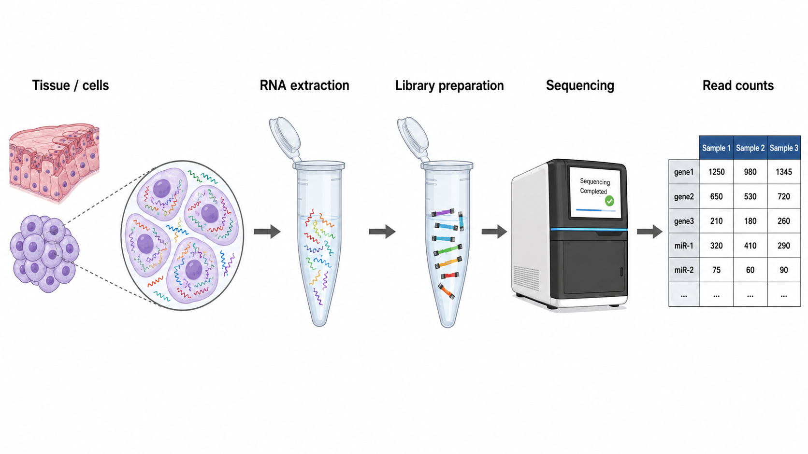
| Assay | What is measured | Main question |
|---|---|---|
| Bulk mRNA-seq | mRNA pooled across many cells | Which genes change? |
| Single-cell RNA-seq | RNA from individual cells | Which cell types and states? |
| Small RNA-seq | miRNAs and other short RNAs | Which small RNAs change? |
| 16S / ITS sequencing | Marker genes | Which microbes are present? |
| Shotgun metagenomics | Microbial DNA | Which organisms and genes? |
| Metatranscriptomics | Microbial RNA | Which microbial genes are active? |
Different biology, the same statistical measurement structure: a count vector \(y_i\in\mathbb{N}^K\) whose total \(n_i=\sum_j y_{ij}\) is fixed by the experiment.
\[a_{ij}=\text{underlying (absolute) abundance of feature }j\text{ in sample } i.\]
But we do not directly observe \(a_{ij}\).
\[ a_{ij} \quad\longrightarrow\quad \pi_{ij}=\frac{a_{ij}}{\sum_k a_{ik}} \quad\longrightarrow\quad y_{ij} \]
Absolute abundance
\(a_i=(a_{i1},\ldots,a_{iK})\), \(a_{ij}\ge0\), \(a_i\neq\mathbf 0\)
Composition
\(\pi_i=\mathcal{C}(a_i)\): \(\pi_{ij}\ge0\), \(\sum_j\pi_{ij}=1\)
Observed counts
\(y_i=(y_{i1},\ldots,y_{iK})\), \(\sum_j y_{ij}=n_i\)
\(\mathcal{C}(a)=a/\mathbf 1^\top a\) is the closure operator. It is scale invariant: \(\mathcal{C}(ta)=\mathcal{C}(a)\) for every \(t>0\).
\[ \begin{aligned} \text{Sample 1: } & a_1 = (10,80,10), \\ \text{Sample 2: } & a_2 = (20,160,20). \end{aligned} \]
Sample 2 contains twice as many molecules of every feature, but both samples have the same composition \((0.1,0.8,0.1)\).
Sequenced to depth \(n=1000\), both give \(\mathbb{E}[y] = (100,800,100)\).
Note
Sequencing depth is set by library preparation, pooling, and budget — not by the number of molecules in the sample. The total \(A_i=\sum_k a_{ik}\) is not identified from the counts.
For conditions \(g\in\{0,1\}\), the scientific target is the absolute log-fold change \(\delta_j=\log\{a_j(1)/a_j(0)\}\). The counts inform only the relative change:
\[ \underbrace{ \log \frac{\pi_j(1)}{\pi_j(0)} }_{r_j\ (\text{relative})} = \underbrace{ \log \frac{a_j(1)}{a_j(0)} }_{\delta_j\ (\text{absolute})} + \underbrace{ \left\{-\log \frac{A(1)}{A(0)}\right\} }_{c_{\text{rel}}\ (\text{common to all } j)}. \]
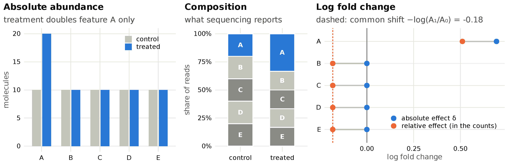
Treatment doubles feature A only; every other feature appears to decrease by the common shift \(c_{\rm rel}=-\log(60/50)=-0.18\).
A composition lives on the simplex
\[ \mathbb{S}^K=\Big\{\pi\in\mathbb{R}^K:\ \pi_j>0,\ \textstyle\sum_{j}\pi_j=1\Big\}, \]
a \((K-1)\)-dimensional space embedded in \(\mathbb{R}^K\). Compositional data analysis works in this open simplex; a truly absent feature (\(a_{ij}=0\)) puts \(\pi_i\) on the boundary, where log-ratios are undefined.
Why ordinary multivariate tools mislead
Related issues (backup slides): the arithmetic mean is not the natural centre; closure can induce positive spurious correlation; results change when some features are dropped and the rest rescaled to sum to 1 (subcompositional incoherence).
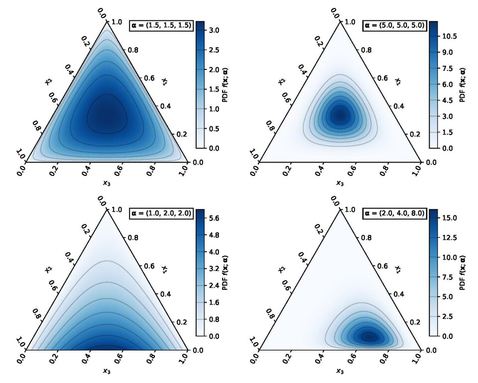
| pair (\(K=2\)) | change in feature 1 | Euclidean | Aitchison \(\|\operatorname{CLR}x-\operatorname{CLR}y\|\) |
|---|---|---|---|
| \((0.01,\,0.99)\) vs \((0.02,\,0.98)\) | doubled | 0.0141 | 0.4973 |
| \((0.49,\,0.51)\) vs \((0.50,\,0.50)\) | +2% | 0.0141 | 0.0282 |
A doubling and a 2% change are the same Euclidean distance apart. The Aitchison distance, built on log-ratios, measures relative change and separates them.
Perturbation \(x\oplus p=\mathcal{C}(x_1p_1,\ldots,x_Kp_K)\): multiply component-wise, then divide by the sum to return to the simplex.
It models a feature-specific bias applied to every sample, e.g. feature 1 captured twice as efficiently: \(p=(2,1)\).
Apply it to both compositions of the first pair:
| composition \(x\) | composition \(y\) | Euclidean | Aitchison | |
|---|---|---|---|---|
| before | \((0.01,\,0.99)\) | \((0.02,\,0.98)\) | 0.0141 | 0.4973 |
| after \(\oplus\,p\) | \((0.02,\,0.99)/1.01=(0.0198,\,0.9801)\) | \((0.04,\,0.98)/1.02=(0.0392,\,0.9607)\) | 0.0274 | 0.4973 |
The Euclidean distance nearly doubles because of the protocol; the Aitchison distance is unchanged, since \(\operatorname{CLR}(x\oplus p)=\operatorname{CLR}(x)+\operatorname{CLR}(p)\) and the common \(\operatorname{CLR}(p)\) cancels in the difference.
Randomness is across samples; within every sample \(\sum_j\pi_{ij}=1\). Then
\[ \begin{aligned} \sum_{j=1}^K\operatorname{Cov}(\pi_j,\pi_k) &\ \underset{\text{bilinearity}}{=}\ \operatorname{Cov}\Big(\textstyle\sum_j\pi_j,\ \pi_k\Big) \ \underset{\sum_j\pi_j\,\equiv\,1}{=}\ \operatorname{Cov}(1,\pi_k)=0\\[4pt] \Longrightarrow\quad \sum_{j\neq k}\operatorname{Cov}(\pi_j,\pi_k) &\ =\ -\operatorname{Var}(\pi_k)\qquad(\text{split off the } j=k \text{ term}). \end{aligned} \]
Dirichlet example. \(\operatorname{Cov}(\pi_j,\pi_k)=-\bar\pi_j\bar\pi_k/(1+\kappa)\): every covariance is negative and set by one concentration \(\kappa\), a very rigid dependence model.
A log-ratio is invariant to scaling, \(\log\{(ta_j)/(ta_k)\}=\log(a_j/a_k)\); hence \(\log(\pi_j/\pi_k)=\log(a_j/a_k)\). It measures relative change, cancels common perturbations, and is unchanged when other features are dropped.
Two ways to turn a composition into log-ratios. Example: \(\pi=(0.2,\ 0.3,\ 0.5)\).
ALR: compare to a reference feature
\[ \operatorname{ALR}(\pi)_j=\log\frac{\pi_j}{\pi_K},\quad j=1,\ldots,K-1 \]
Reference = feature 3: \(\big(\log\tfrac{0.2}{0.5},\ \log\tfrac{0.3}{0.5}\big)=(-0.9162,\ -0.5108)\)
\(K-1\) unconstrained numbers; depends on the reference.
CLR: compare to the geometric mean
\[ \operatorname{CLR}(\pi)_j=\log\frac{\pi_j}{g(\pi)},\quad g(\pi)=\Big(\prod_k\pi_k\Big)^{1/K} \]
\(g=(0.2\cdot0.3\cdot0.5)^{1/3}=0.3107\): \((-0.4405,\ -0.0351,\ 0.4757)\)
\(K\) numbers that sum to zero; no reference needed. \(\log g(\pi)\) is the mean of \(\log\pi_k\), so CLR just centres the logs.
In log-ratio coordinates, ordinary tools (means, distances, PCA, regression) behave sensibly. The Aitchison distance is just Euclidean distance on CLR vectors.
Dirichlet \(\pi\sim\operatorname{Dir}(\alpha)\)
Logistic-normal (Aitchison & Shen, 1980)
In practice we combine them with a count layer:
\[ \underbrace{\xi_i\sim N(m,\Sigma)}_{\text{dependence}}\ \to\ \underbrace{p_i\sim\operatorname{Dir}(\kappa\,\operatorname{softmax}(\xi_i))}_{\text{extra variation}}\ \to\ \underbrace{y_i\sim\operatorname{Mult}(n_i,p_i)}_{\text{sampling}} . \]
This Dirichlet–multinomial logistic-normal (DM-LN) model is our simulation engine later.
Log-ratio methods (LinDA, ANCOM-BC2, ALDEx2) are widely used for good reasons: they respect compositional geometry, are fast, and plug into familiar regression tools.
Some features of sequencing counts are harder to handle once the counts are transformed:
Can we model counts directly while respecting compositional geometry?
Samples \(i=1,\ldots,M\); features \(j=1,\ldots,K\); covariates \(x_i\in\mathbb{R}^P\).
\[ \begin{aligned} y_{ij}\mid \pi_{ij},\phi_{ij} &\sim \operatorname{NB}\big(n_i\,\pi_{ij},\ \phi_{ij}\big),\\ \pi_i &= \operatorname{softmax}(\eta_i),\qquad \eta_{ij}=x_i^\top\beta_j, \end{aligned} \]
with \(\mu_{ij}=n_i\pi_{ij}\) and \(\operatorname{Var}(y_{ij})=\mu_{ij}+\mu_{ij}^2/\phi_{ij}\) (\(\phi\) is a precision).
NB likelihood
On the count scale: zeros need no pseudocount.
Softmax mean
\(\pi_i\in\mathbb{S}^K\); features coupled through the normaliser.
Feature-wise precision
Each feature (and condition, sample) has its own overdispersion.
Note
The likelihood is a product of NB densities. It does not constrain \(\sum_j y_{ij}=n_i\) for each draw — only \(\sum_j\mathbb{E}[y_{ij}]=n_i\). A deliberate relaxation that buys feature-specific overdispersion.
Let \(\bar\eta_i=K^{-1}\sum_j\eta_{ij}\) and \(\tilde\eta_i=\eta_i-\bar\eta_i\mathbf 1\). Then
\[ \operatorname{softmax}(\eta_i)=\operatorname{CLR}^{-1}(\tilde\eta_i), \qquad \operatorname{CLR}(\pi_i)_j=\eta_{ij}-\bar\eta_i . \]
NBSR is a count-scale log-ratio regression. The identifiable part of the linear predictor is the CLR of the fitted composition — but we never take a log of an observed count.
Adding the same constant to every \(\eta_{ij}\) leaves \(\pi_i\) unchanged: the composition cannot see that direction. This is the same \(\mathbf 1\) direction as the singular covariance in Pitfall 2, and it is why the coefficients need a constraint (next slide).
\(\operatorname{softmax}(\eta+c\mathbf 1)=\operatorname{softmax}(\eta)\), so \(\beta_j\mapsto\beta_j+\gamma\) for all \(j\) leaves the likelihood unchanged. We need \(P\) constraints.
ALR constraint \(\beta_K=0\)
CLR constraint \(\sum_j\beta_j=0\)
They parameterise the same mean model: \(\beta^{\rm CLR}_j=\beta^{\rm ALR}_j-\bar\beta^{\rm ALR}\), \(\ \bar\beta^{\rm ALR}=\frac1K\sum_k\beta_k^{\rm ALR}\).
Fit in ALR, report in CLR, applying the map to every posterior draw.
For a binary condition in column \(p\) of \(x_i\), the reference-free contrast is
\[ \Delta^{\rm clr}_j=\operatorname{CLR}(\pi(1))_j-\operatorname{CLR}(\pi(0))_j=\beta_{jp}-\tfrac1K\textstyle\sum_k\beta_{kp}, \]
the change of feature \(j\) relative to the geometric mean of the composition — linear in \(\beta\).
| Component | Scientific question | NBSR component |
|---|---|---|
| Location | How does the expected composition change? | \(\beta_j\) via softmax |
| Scale | How does residual variability change? | precision \(\phi_{ij}\) |
| Shape / dependence | How do features co-vary beyond the closure? | latent factors \(z_i^\top\gamma_j\) (ongoing) |
Most genomic analyses focus on location. Today: location done carefully (Part 5), scale as a regulariser (Part 4), and dependence as the open problem (Part 8).
Sequencing then counts molecules from \(p_i\): \(\ y_{ij}\mid p_{ij}\sim\text{Poisson}(n_ip_{ij})\). By the law of total variance,
\[ \operatorname{Var}(y_{ij}) =\underbrace{n_i\pi_{ij}}_{\text{sequencing noise}} +\underbrace{n_i^2\operatorname{Var}(p_{ij})}_{\text{biological variation}} . \]
Match to an NB with mean \(\mu_{ij}=n_i\pi_{ij}\) and variance \(\mu_{ij}+\mu_{ij}^2/\phi_{ij}\):
\[ \frac{1}{\phi_{ij}}=\frac{\operatorname{Var}(p_{ij})}{\pi_{ij}^2}=\operatorname{CV}^2(p_{ij}). \]
\(1/\phi\) = between-sample variability of the realised composition (small \(\phi\) = variable feature).
If \(p_i\sim\operatorname{Dir}(\kappa\pi_i)\), then \(\operatorname{CV}^2(p_{j})=\dfrac{1-\pi_j}{\pi_j(1+\kappa)}\), so
\[ \boxed{\ \log\phi_j=\operatorname{logit}(\pi_j)+\log(1+\kappa)\ } \]
Precision is linear in logit-abundance with unit slope. Rare features are intrinsically noisier on the relative scale.
A single concentration \(\kappa\) ties every feature to the same curve. Real data need more flexibility (next slide).
NBSR generalises the Dirichlet relationship:
\[ \log\phi_{ij}=b_0+b_j+b_\pi\operatorname{logit}(\pi_{ij})+w_i^\top b_w . \]
| term | role | Dirichlet value |
|---|---|---|
| \(b_0\) | global concentration | \(\log(1+\kappa)\) |
| \(b_j\) | feature-specific departure (hierarchical, \(b_j\sim N(0,\sigma_b^2)\)) | \(0\) |
| \(b_\pi\) | mean–dispersion slope, prior \(N(1,0.1^2)\) | \(1\) |
| \(w_i^\top b_w\) | sample or batch effects, e.g. one offset \(c_i\) per sample | \(\log(1+\kappa_i)-\overline{\log(1+\kappa)}\) |
Because \(\pi_{ij}\) depends on the covariates, precision automatically differs between conditions as well as between features.
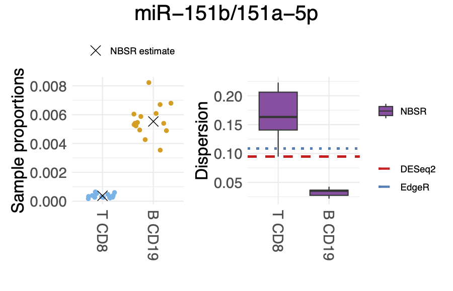
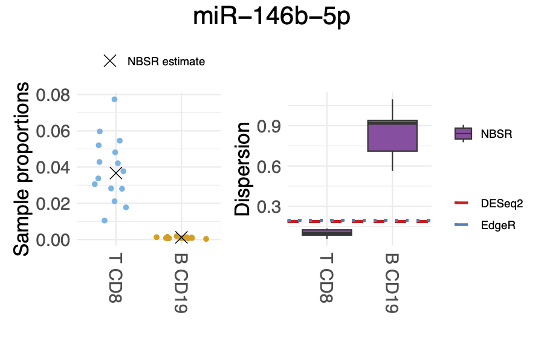
If precision differs across conditions but is modelled as constant, standard errors are misestimated and intervals are miscalibrated.
Fixed precision. For an observed zero, \(\ell(0;\mu,\phi)=-\phi\log(1+\mu/\phi)\), so
\[ \frac{\partial\ell(0)}{\partial\log\mu}=-\frac{\mu\phi}{\mu+\phi}\ \approx\ -\phi\qquad(\mu\gg\phi). \]
Raising \(\log\mu\) by \(\Delta\) costs only \(\approx\phi\Delta\) per zero. With small \(\phi\), many zeros barely resist a few large counts.
Abundance-dependent precision. For rare features \(\operatorname{logit}\pi\approx\log\pi\), so with \(b_\pi\approx1\), \(\phi=c\mu\) with \(c\) fixed. Then
\[ \ell(0;\mu,c\mu)=-c\mu\log\!\Big(1+\frac1c\Big), \qquad \text{loss from }\mu_0\to\mu_0e^\Delta = \phi_0\,(e^{\Delta}-1)\log\!\Big(1+\frac{\mu_0}{\phi_0}\Big). \]
The penalty grows exponentially in \(\Delta\) instead of linearly.
Example: \(\phi=0.05\), \(\mu_0=1\), \(m=10\) zeros, \(\Delta=4\): 1.97 nats (fixed) vs 81.6 nats (coupled).
The model controls sparse features through its likelihood, rather than through a pseudocount, a prevalence filter, or a pseudocount-sensitivity filter.
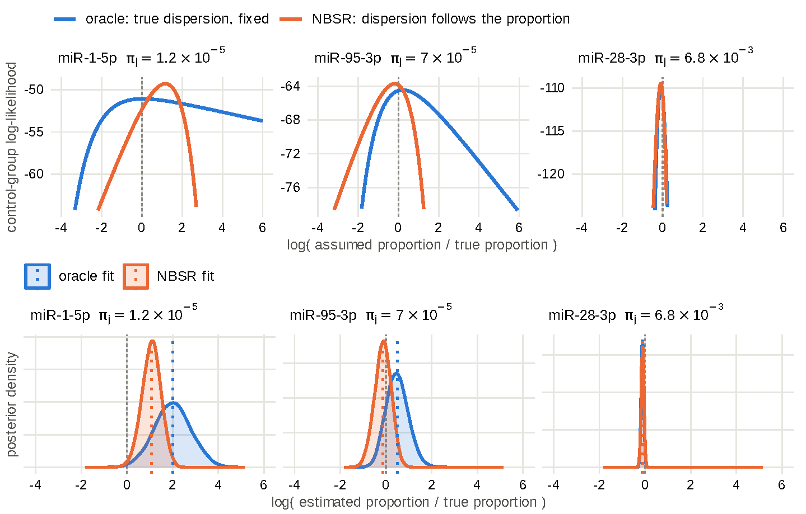
Three null miRNAs, 10 control samples. Top: control-group log-likelihood vs. assumed proportion. Bottom: posteriors under an oracle fit (true dispersion, held fixed) and NBSR. Dashed: truth; dotted: posterior means.
| Model | Couples features? | Overdispersion | Zeros |
|---|---|---|---|
| Multinomial logistic | yes (softmax) | none — \(\operatorname{Var}\) fixed by mean | fine |
| Dirichlet–multinomial | yes | one \(\kappa\) shared by all features | fine |
| Log-ratio + Gaussian regression | no (per feature) | per feature | pseudocount |
| DESeq2 / edgeR (NB GLM) | no (normalisation offset) | per feature | fine |
| NBSR | yes (softmax) | per feature, per condition, per sample | fine |
Centring removes the unobserved total — but leaves a different common term:
\[ \Delta^{\rm clr}_j = r_j-\frac1K\sum_k r_k =(\delta_j+c_{\rm rel})-\frac1K\sum_k(\delta_k+c_{\rm rel}) =\delta_j+\underbrace{(-\bar\delta)}_{c_{\rm CLR}} . \]
Definition. The CLR compositional shift is the scalar \(c_{\rm CLR}\) with \(\Delta^{\rm clr}_j=\delta_j+c_{\rm CLR}\) for all \(j\).
The data identify \(\Delta^{\rm clr}\), but not \(\delta\): adding the same constant \(t\) to every \(\delta_j\) also raises \(\bar\delta\) by \(t\), so \(\Delta^{\rm clr}_j=\delta_j-\bar\delta\) is unchanged. Every \(\delta+t\mathbf 1\) fits equally well.
Biologically, that is multiplying every abundance by \(e^t\), a change in the total the sequencer cannot see (Part 1).
To break it we need either
Add the same known amount of a synthetic molecule to every sample before library prep. Its true abundance does not change between conditions.
Treatment doubles A; B, C unchanged; spike-in S = 10 in both groups.
| A | B | C | S | |
|---|---|---|---|---|
| control | 10 | 10 | 10 | 10 |
| treated | 20 | 10 | 10 | 10 |
| log fold change | A | B |
|---|---|---|
| relative (composition incl. S) | 0.4700 | −0.2231 |
| ratio to spike-in | 0.6931 | 0 |
| truth \(\delta\) | 0.6931 | 0 |
The spike-in is a reference whose absolute level is known not to move, so log-ratios against it recover \(\delta\) directly: it pins down the free constant \(t\).
Caveats: \(\delta\) is “per unit the spike-in was added to” (per cell ≠ per µg RNA), and the spike-in must face the same capture and amplification biases as real features.
Following LinDA (Zhou et al., 2022): the across-feature distribution of absolute effects has a unique mode at zero,
\[ \operatorname{mode}_{1\le k\le K}(\delta_k)=0 . \]
Exact sparsity is sufficient but not necessary: unchanged features may scatter near zero, so long as they remain the densest group.
Because the mode is translation-equivariant,
\[ \operatorname{mode}_k(\Delta^{\rm clr}_k)=\operatorname{mode}_k(\delta_k)+c_{\rm CLR}=c_{\rm CLR}, \]
giving the estimator
\[ \Delta^{\rm adj}_j=\Delta^{\rm clr}_j-\widehat m,\qquad \widehat m=\operatorname{mode}_k\big(\Delta^{\rm clr}_k\big)\ \ \text{(Gaussian KDE)}. \]
Compare: ANCOM-BC estimates the null centre of a 3-component Gaussian mixture by EM; ALDEx2 reports \(\Delta^{\rm clr}\) and does not correct.
\[ \operatorname{Var}(\Delta^{\rm adj}_j) =\operatorname{Var}(\Delta^{\rm clr}_j) +\operatorname{Var}(\widehat m) -2\operatorname{Cov}(\Delta^{\rm clr}_j,\widehat m). \]
Is that safe? It depends on which features you ask about.
Our solution: recompute \(\widehat m\) inside every posterior draw. Both missing terms are then propagated automatically.
Priors. \(\beta_{jp}\sim N(0,\sigma_{\beta p}^2)\) under \(\beta_K=0\); \(b_0\sim N(0,1)\); \(b_j\sim N(0,\sigma_b^2)\), \(\sigma_b\sim N^+(0,0.5^2)\); \(b_\pi\sim N(1,0.1^2)\).
Empirical Bayes option for real data: fit with \(\sigma_{\beta p}=10\), then set \(\sigma_{\beta p}\) by matching a zero-centred normal’s upper tail to the precision-weighted 0.95 quantile of \(|\hat\beta_{jp}|\) (as in DESeq2), and refit.
Per-draw estimand. For each posterior draw \(s\):
\[ \beta^{(s)}\ \xrightarrow{\ \text{centre}\ }\ \Delta^{{\rm clr},(s)}\ \xrightarrow{\ \text{KDE mode}\ }\ \widehat m^{(s)}\ \longrightarrow\ \Delta^{{\rm adj},(s)}_j=\Delta^{{\rm clr},(s)}_j-\widehat m^{(s)} . \]
The posterior of \(\Delta^{\rm adj}_j\) is the empirical distribution of \(\{\Delta^{{\rm adj},(s)}_j\}_s\).
Gold standard: HMC (Stan, NUTS), with clean convergence diagnostics. But: 50 / 132 / 345 min per fit at \(n=10/20/40\).
Draw from the Gaussian with one triangular solve per draw:
\[ \beta^{(s)}=\hat\beta+L^{-\top}z^{(s)},\qquad z^{(s)}\sim N(0,I)\ \Rightarrow\ \beta^{(s)}\sim N\big(\hat\beta,(-H)^{-1}\big). \]
The same factor gives the delta-method variance of the (linear) CLR contrast exactly:
\[ \widehat{\operatorname{Var}}(\Delta^{\rm clr}_j)=q_j^\top(-H)^{-1}q_j=\|L^{-1}q_j\|^2,\qquad q_{j,(k,d)}=\mathbf 1\{d=p\}\big(\mathbf 1\{k=j\}-\tfrac1K\big). \]
Gradients and Hessian in matrix form in PyTorch: a fit takes ~2 minutes on one core vs. hours for HMC.
Remaining approximations: Gaussian shape; dispersion held at its mode. The shift is treated exactly as in the sampler.
| Rule | Statistic | Uses |
|---|---|---|
| Local false sign rate | \(\operatorname{lfsr}_j=\min(p^+_j,1-p^+_j)\), \(p^+_j=\frac1S\sum_s\mathbf 1\{\Delta^{{\rm adj},(s)}_j>0\}\) | full posterior shape |
| Posterior-\(z\) + BH | \(z^{\rm post}_j=\overline{\Delta^{\rm adj}_j}/\operatorname{sd}(\Delta^{\rm adj}_j)\) | first two moments, shift uncertainty included |
| Delta method + BH (earlier paper) | \(z^{\rm DM}_j=\widehat{\Delta}^{\rm adj}_j/\widehat{\operatorname{Var}}(\Delta^{\rm clr}_j)^{1/2}\) | shift treated as fixed |
If the marginal posterior is Gaussian, \(p^{\rm post}_j=2\,\operatorname{lfsr}_j\).
Important
Under a continuous prior, there are no exact nulls in the posterior. A sign probability ranks features well, but a threshold on it is not a frequentist error rate.
miRNA benchmark, HMC posteriors, pooled over settings and replicates:
| \(n\) | rule | TP | FP | TPR | FDR |
|---|---|---|---|---|---|
| 10 | \(\operatorname{lfsr}\le0.025\) (95% CI excludes 0) | 675 | 476 | 0.964 | 0.414 |
| \(\operatorname{lfsr}\le0.01\) | 660 | 128 | 0.943 | 0.162 | |
| \(\operatorname{lfsr}\le0.001\) | 635 | 5 | 0.907 | 0.008 | |
| 40 | \(\operatorname{lfsr}\le0.025\) (95% CI excludes 0) | 696 | 988 | 0.994 | 0.587 |
| \(\operatorname{lfsr}\le0.01\) | 692 | 374 | 0.989 | 0.351 | |
| \(\operatorname{lfsr}\le0.001\) | 687 | 36 | 0.981 | 0.050 |
“The 95% credible interval excludes zero” declares a null feature in roughly half of its calls. With ~400 features, multiplicity bites even for Bayesians. We use \(\operatorname{lfsr}\le10^{-3}\).
For sample \(i\) in condition \(g_i\), with unnormalised abundance vector \(\alpha(g)\) and \(\kappa(g)=\sum_j\alpha_j(g)\):
\[ \begin{aligned} \xi_i&\sim N\big(m(g_i),\Sigma\big), & \theta_i&=\operatorname{softmax}(\xi_i),\\ p_i&\sim\operatorname{Dir}\big(\kappa(g_i)\,\theta_i\big), & Y_i&\sim\operatorname{Mult}(n_i,p_i), \end{aligned} \qquad m_j(g)=\log\alpha_j(g)-\tfrac12\Sigma_{jj}. \]
Effects imposed on absolute abundance, \(\alpha_j(1)=\alpha_j(0)e^{\delta_j}\), so \(\delta_j\), \(c_{\rm rel}=-\log\{\kappa(1)/\kappa(0)\}\) and \(r_j\) are all known exactly.
Nesting. \(\Sigma=0\): Dirichlet–multinomial. \(\kappa\to\infty\): multinomial logistic-normal (fido/pibble; LinDA’s log-normal simulation). Conditional on \(\xi_i\): same count model as the Poisson-lognormal of ANCOM-BC2.
None of the fitted models — including NBSR — contains \(\Sigma\). The microbiome benchmark tests every method under misspecification.
miRNA (McCall et al., 2017)
Microbiome (Baxter et al., 2016)
A multivariate aside: \(L\) comes from the top 5 eigenpairs of the latent covariance restricted to the 53 prevalent genera (53% of the trace); the 196 rare genera have zero loadings. A low-rank-plus-diagonal factor model — exactly the structure a latent-factor NBSR would estimate.
Pooled over 60 replicates per \(n\). TPR, realised FDR (%), and RMSE of \(\hat\delta\). Orange = FDR above 5%.
| method | TPR | FDR | err | TPR | FDR | err | TPR | FDR | err |
|---|---|---|---|---|---|---|---|---|---|
| \(n=10\) | \(n=20\) | \(n=40\) | |||||||
| NBSR HMC, lfsr | 90.7 | 0.8 | .15 | 96.0 | 1.2 | .11 | 98.1 | 5.0 | .09 |
| NBSR Laplace, post. \(z\) | 91.7 | 4.2 | .16 | 96.7 | 2.0 | .11 | 98.1 | 2.6 | .09 |
| NBSR Laplace, delta | 92.6 | 5.7 | .16 | 96.7 | 2.6 | .11 | 98.1 | 3.0 | .09 |
| LinDA | 52.1 | 4.9 | .26 | 69.4 | 18.5 | .28 | 82.7 | 25.0 | .20 |
| ANCOM-BC2 w/ filter | 23.7 | 0.6 | .25 | 45.0 | 0.3 | .23 | 63.3 | 0.0 | .21 |
| ANCOM-BC2 no filter | 52.0 | 24.9 | .25 | 73.7 | 70.7 | .23 | 84.4 | 76.4 | .21 |
| ALDEx2 | 47.9 | 0.3 | .31 | 71.0 | 9.8 | .28 | 80.6 | 1.2 | .23 |
| DESeq2 | 88.9 | 61.8 | .20 | 94.1 | 62.5 | .16 | 96.6 | 68.3 | .14 |
| edgeR QLF | 90.4 | 82.5 | .18 | 95.9 | 87.5 | .14 | 98.0 | 89.0 | .11 |
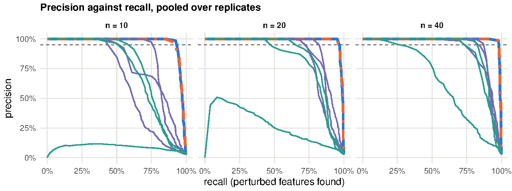
Each method ranks features by its own test statistic. NBSR HMC: blue solid; NBSR Laplace: orange dot-dash; count-based methods: purple; compositional methods: teal. Dashed line: 95% precision.
At \(n=10\), NBSR recovers 92% (HMC) / 91% (Laplace) of perturbed features at 95% precision, vs. 75% for the best published method.
| \(n\) | method | coverage (perturbed) | coverage (null) | TP | FP | FDR | perfect rankings (of 60) |
|---|---|---|---|---|---|---|---|
| 10 | HMC | 0.971 | 0.979 | 635 | 5 | 0.008 | 31 |
| Laplace | 0.931 | 0.975 | 643 | 31 | 0.046 | 31 | |
| 20 | HMC | 0.963 | 0.969 | 672 | 8 | 0.012 | 41 |
| Laplace | 0.953 | 0.970 | 677 | 20 | 0.029 | 39 | |
| 40 | HMC | 0.933 | 0.959 | 687 | 36 | 0.050 | 46 |
| Laplace | 0.940 | 0.965 | 687 | 25 | 0.035 | 47 |
Each entry divided by \(\operatorname{Var}_{\rm HMC}(\Delta^{\rm adj}_j)\) for the same feature, averaged over perturbed features:
| setting | \(n\) | \(\operatorname{Var}(\widehat m)\) | \(2\operatorname{Cov}(\Delta^{\rm clr}_j,\widehat m)\) | \(\operatorname{Var}(\Delta^{\rm clr}_j)\) (fixed shift) |
|---|---|---|---|---|
| HIGH | 10 | 0.76 | 0.55 | 0.78 |
| 20 | 0.82 | 0.62 | 0.80 | |
| 40 | 0.91 | 0.78 | 0.87 | |
| MED | 10 | 0.26 | 0.18 | 0.92 |
| 20 | 0.30 | 0.21 | 0.92 | |
| 40 | 0.34 | 0.28 | 0.94 | |
| LOW | 10 | 0.04 | 0.03 | 0.99 |
| 20 | 0.05 | 0.04 | 0.99 | |
| 40 | 0.06 | 0.05 | 0.99 | |
| null | all | 0.05 | 0.04 | 0.99 |
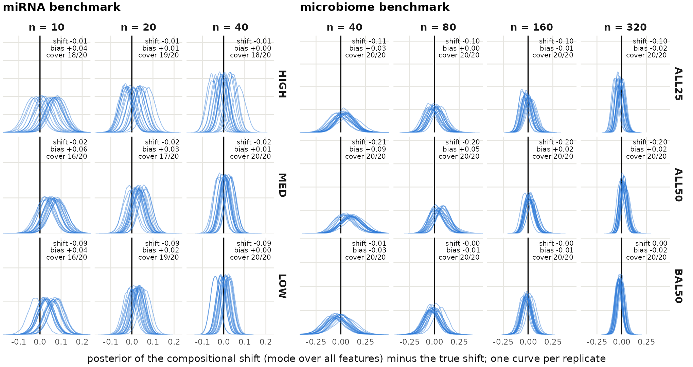
Posterior of the compositional shift (mode over all features) minus the true shift; one curve per replicate.
ALL50 (50 genera increased), each method at its stated rule. Cells: TPR / FDR (%). NBSR = Laplace fit with per-sample precision offsets \(c_i\) (explained two slides ahead).
| method | \(n=40\) | \(n=80\) | \(n=160\) | \(n=320\) |
|---|---|---|---|---|
| NBSR, lfsr | 17.9 / 3.3 | 35.8 / 2.5 | 62.4 / 0.0 | 83.4 / 0.6 |
| NBSR, post. \(z\) | 17.1 / 1.7 | 39.4 / 2.7 | 68.2 / 1.6 | 87.7 / 2.9 |
| NBSR, delta (fixed shift) | 26.3 / 6.8 | 47.8 / 5.2 | 72.0 / 3.6 | 88.6 / 5.1 |
| LinDA | 20.7 / 7.6 | 37.4 / 7.9 | 56.4 / 8.4 | 75.5 / 15.9 |
| ALDEx2 | 8.3 / 1.2 | 20.7 / 1.0 | 35.5 / 5.6 | 49.8 / 18.4 |
| ANCOM-BC2 w/ filter | 2.9 / 0.0 | 8.2 / 0.0 | 19.2 / 0.0 | 33.9 / 0.0 |
| ANCOM-BC2 no filter | 8.8 / 72.2 | 16.7 / 62.7 | 27.1 / 53.9 | 42.7 / 42.8 |
Power at a matched realised FDR of 5% (ALL50): NBSR 0.23 / 0.48 / 0.75 / 0.89 · LinDA 0.13 / 0.35 / 0.53 / 0.63 · ALDEx2 0.05 / 0.23 / 0.23 / 0.24. NBSR has the lowest fold-change RMSE in every setting (0.53 → 0.24 vs. ≥ 0.64 for others at \(n=320\)).
In ALL50 the CLR shift is about \(-0.21\):
Important
A bias that stays fixed while the standard error shrinks like \(n^{-1/2}\) turns into false discoveries as \(n\) grows. More data makes a biased test worse.
NBSR’s null estimates average near zero at every \(n\).
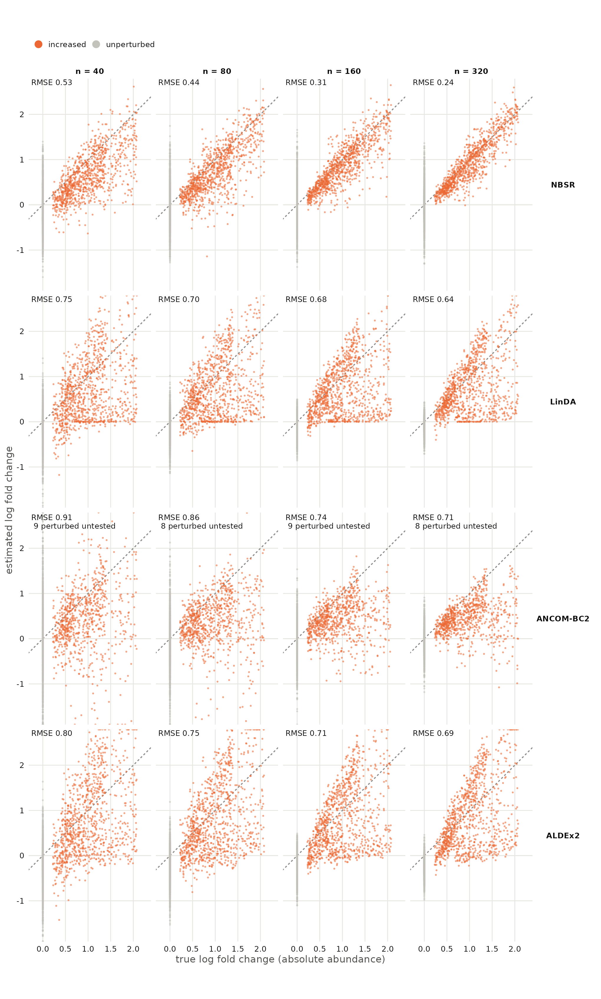
\[ \log\phi_{ij}=b_0+b_j+b_\pi\operatorname{logit}(\pi_{ij})+c_i,\qquad \textstyle\sum_i c_i=0 . \]
Two sources of gain:
Effect on the microbiome benchmark (posterior-\(z\) + BH, \(n=320\); TPR / FDR %, and mean bias of null estimates):
| case | base model | with \(c_i\) | null bias: base → with \(c_i\) |
|---|---|---|---|
| ALL25 | 85 / 5.6 | 86 / 2.9 | \(+0.030\to+0.009\) |
| ALL50 | 82 / 10.0 | 88 / 2.9 | \(+0.013\to+0.004\) |
| BAL50 | 81 / 1.5 | 82 / 1.6 | \(+0.012\to+0.002\) |
The offsets remove the excess FDR in the unbalanced cases, at no cost in BAL50.
Selective-growth experiment (McMurrough et al., 2014): 1,600 enzyme variants, 7 selected vs. 7 non-selected. Selection can only increase an active variant ⇒ a “down” call contradicts the mechanism. 27 variants independently characterised.
| method | of the 27 | others up | others down | 5+5: of 27 | 5+5: down |
|---|---|---|---|---|---|
| NBSR, lfsr \(\le10^{-3}\) | 22 | 183 | 0 | 22.2 | 0.0 |
| NBSR, post. \(z\) | 23 | 198 | 0 | 22.5 | 0.0 |
| NBSR, delta | 25 | 324 | 0 | 24.6 | 0.0 |
| LinDA | 22 | 355 | 382 | 20.6 | 324.9 |
| ALDEx2 | 18 | 52 | 0 | 11.4 | 0.0 |
| ANCOM-BC2 | 9 | 10 | 3 | 6.7 | 2.0 |
| DESeq2 | 25 | 34 | 1,448 | 21.4 | 1,335.0 |
| edgeR LRT | 27 | 124 | 1,219 | 24.4 | 1,117.7 |
When a few variants grow, the proportion of every other variant falls. A method that ignores composition reads that fall as a decrease.
Label permutations in two stool studies (Baxter CRC: 172 vs. 120; Schubert C. difficile: 154 vs. 93). Every call is a false positive.
| method | Baxter \(n=80\): mean FP (% runs with any call) | Schubert \(n=80\) | raw \(p<0.05\) |
|---|---|---|---|
| NBSR | 0.0 (2) | 0.0 (2) | 0.017 |
| LinDA | 0.1 (6) | 0.1 (8) | 0.035 |
| ALDEx2 | 0.0 (2) | 0.0 (0) | 0.006 |
| ANCOM-BC2 | 0.0 (0) | 0.0 (0) | 0.322 |
| DESeq2 | 0.8 (42) | 0.3 (24) | 0.043 |
| edgeR QLF | 42.6 (100) | 36.7 (100) | 0.238 |
| edgeR LRT | 3.2 (94) | 3.2 (86) | 0.158 |
Methodology
Empirical
\[ \eta_{ij}=x_i^\top\beta_j+z_i^\top\gamma_j,\qquad z_i\in\mathbb{R}^q,\ q\ll K . \]
In CLR coordinates, \(\operatorname{Cov}(\operatorname{CLR}\pi_i\mid x_i)\approx \tilde\Gamma\tilde\Gamma^\top\) with \(\tilde\Gamma=(I-\tfrac1K\mathbf 1\mathbf 1^\top)\Gamma\): a factor model on the Aitchison simplex, fitted on the count scale.
Captures shared residual variation from cell-type mix, tumour purity, immune infiltration, batch, unmeasured subtypes.
Why it matters here: the microbiome benchmark’s covariance \(\Sigma=LL^\top+\operatorname{diag}(d)\) is exactly what every current method — NBSR included — ignores.
Questions?
Seong-Hwan Jun
University of Rochester Medical Center
Email: seonghwan_jun@urmc.rochester.edu
Software: github.com/junseonghwan/nbsr
Acknowledgement: computing resources of the Empire AI Consortium.
| Transform | Definition | Lives in | Properties |
|---|---|---|---|
| ALR | \(\log(\pi_j/\pi_K)\), \(j<K\) | \(\mathbb{R}^{K-1}\) | unconstrained, but reference-dependent |
| CLR | \(\log(\pi_j/g(\pi))\) | zero-sum hyperplane in \(\mathbb{R}^K\) | symmetric; covariance singular |
| ILR | \(V^\top\log\pi\), \(V^\top V=I_{K-1}\), \(V^\top\mathbf 1=0\) | \(\mathbb{R}^{K-1}\) | orthonormal; basis-dependent |
Aitchison geometry. Perturbation \(\pi\oplus\nu=\mathcal{C}(\pi_1\nu_1,\ldots,\pi_K\nu_K)\), powering \(t\odot\pi=\mathcal{C}(\pi_1^t,\ldots,\pi_K^t)\), and inner product \(\langle\pi,\nu\rangle_A=\langle\operatorname{CLR}\pi,\operatorname{CLR}\nu\rangle\) make \(\mathbb{S}^K\) a \((K-1)\)-dimensional Euclidean vector space; CLR and ILR are isometries.
\(VV^\top = I_K-\tfrac1K\mathbf 1\mathbf 1^\top\): CLR is the ILR coordinates expressed back in \(\mathbb{R}^K\).
The natural centre of a set of compositions is the closed geometric mean:
\[ \operatorname{cen}(\pi_1,\ldots,\pi_n)=\mathcal{C}\Big(\exp\Big\{\tfrac1n\textstyle\sum_i\log\pi_{i1}\Big\},\ \ldots\Big), \]
the arithmetic mean in log-ratio coordinates, mapped back.
Example. Average \((0.01,\,0.99)\) and \((0.0001,\,0.9999)\):
Curvature. A straight line in log-ratio space is a curve on the simplex. The arithmetic mean of a curved cloud can fall off the data.
Consequence for PCA: on raw proportions, abundant features dominate the total variance and curvature wastes components → use CLR-PCA (Aitchison, 1983).
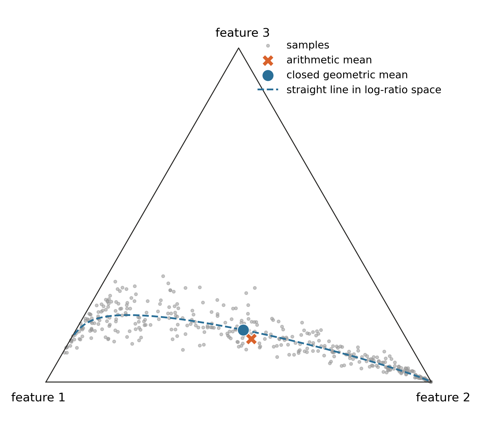
Absolute abundances \(a=(a_1,\,a_2,\,X)\): \(a_1,a_2\) nearly constant and independent; \(X\) a highly variable “bloom” feature. Then
\[ \pi_1=\frac{a_1}{a_1+a_2+X},\qquad \pi_2=\frac{a_2}{a_1+a_2+X} \]
share a random denominator, so \(\pi_1\) and \(\pi_2\) rise and fall together.
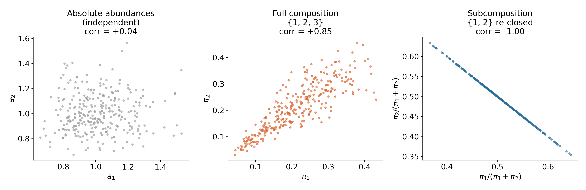
Same 300 simulated samples, three answers. Left: absolute abundances. Middle: proportions in the full composition. Right: after dropping feature 3 and re-closing.
Pearson (1897): ratios with a common denominator are correlated. “Negative bias” describes the average, not any particular pair.
Aitchison’s variation matrix
\[ T_{jk}=\operatorname{Var}\Big\{\log\frac{\pi_j}{\pi_k}\Big\}. \]
Consequences for multivariate practice
A subcomposition keeps features \(S\subset\{1,\ldots,K\}\) and re-closes: \(\pi_S=\mathcal{C}(\pi_j:\ j\in S)\).
A method is subcompositionally coherent if its conclusions about the features in \(S\) do not depend on whether the other features were measured.
Same simulated data as the spurious-correlation slide, features 1 and 2:
| analysis | \(\operatorname{corr}(\cdot_1,\cdot_2)\) |
|---|---|
| absolute abundances | \(+0.04\) |
| full composition \(\{1,2,3\}\) | \(+0.85\) |
| subcomposition \(\{1,2\}\) | \(-1.00\) |
| \(\log(\pi_1/\pi_2)\) in either | identical (difference \(<10^{-15}\)) |
| quantity | coherent? |
|---|---|
| correlation / covariance of proportions | ✗ |
| Euclidean distance, arithmetic mean | ✗ |
| CLR coordinate \(\log(\pi_j/g(\pi))\) | ✗ — \(g(\pi)\) depends on the panel |
| pairwise log-ratios, variation matrix \(T_{jk}\), ILR balances within \(S\) | ✓ |
What decides which features are in the panel?
An incoherent analysis gives answers that depend on these arbitrary choices.
An honest caveat for NBSR. The CLR contrast \(\Delta^{\rm clr}_j\) is measured against the geometric mean of the panel, so it is not coherent: drop features and it moves. This is one reason we target the absolute effect \(\delta_j\) instead:
Could a prevalence filter that mostly removes null features threaten the modal-null assumption?
\[ y\sim\operatorname{NB}(\mu,\phi):\quad p(y)=\frac{\Gamma(y+\phi)}{\Gamma(\phi)\,y!}\Big(\frac{\phi}{\mu+\phi}\Big)^{\phi}\Big(\frac{\mu}{\mu+\phi}\Big)^{y}, \]
\[ \mathbb{E}y=\mu,\qquad \operatorname{Var}y=\mu+\mu^2/\phi,\qquad I(\log\mu)=\frac{\mu\phi}{\mu+\phi}=\Big(\frac1\mu+\frac1\phi\Big)^{-1}. \]
The Fisher information on the log scale is capped by \(\min(\mu,\phi)\): deeper sequencing cannot average away between-sample variability.
With \(\beta=(\beta_1^\top,\ldots,\beta_{K-1}^\top)^\top\) and \(\beta_K=0\),
\[ \Delta^{\rm clr}_j= \begin{cases} \beta_{jp}-\frac1K\sum_{r<K}\beta_{rp}, & j<K,\\ -\frac1K\sum_{r<K}\beta_{rp}, & j=K, \end{cases} \qquad q_{j,(k,d)}=\mathbf 1\{d=p\}\Big(\mathbf 1\{k=j\}-\frac1K\Big). \]
Linear in \(\beta\), so the delta-method variance is exact within the Gaussian approximation.
miRNA. LOW: 20 features with \(\alpha_j\in(1,10]\), \(u_j\sim U[0.5,5]\); MED: 10 with \(\alpha_j\in[10,50)\), \(u_j\sim U[0.25,2.5]\); HIGH: 5 with \(\alpha_j>50\), \(u_j\sim U[0.125,1.25]\); \(\delta_j=u_j\log2\). Library size \(\lceil U(10^6,10^8)\cdot U(0,0.5)\rceil\). \(c_{\rm rel}\approx-0.12,-0.16,-0.22\).
Microbiome. Fold changes log-uniform: HIGH 1.25–2, MED 1.5–4, LOW 2–8. ALL25: 5/10/10 genera; ALL50: 10/20/20; BAL50: 10/20/20 half up, half down. \(\kappa(0)=100\). Library sizes resampled from the 172 controls (764–100,046 reads).
| case | method | \(n=40\) | 80 | 160 | 320 |
|---|---|---|---|---|---|
| ALL25 | NBSR w/ \(c_i\), post. \(z\) | 0.26 | 0.57 | 0.74 | 0.88 |
| LinDA | 0.25 | 0.50 | 0.44 | 0.66 | |
| ALDEx2 | 0.17 | 0.38 | 0.35 | 0.45 | |
| ALL50 | NBSR w/ \(c_i\), post. \(z\) | 0.23 | 0.48 | 0.75 | 0.89 |
| LinDA | 0.13 | 0.35 | 0.53 | 0.63 | |
| ALDEx2 | 0.05 | 0.23 | 0.23 | 0.24 | |
| BAL50 | NBSR w/ \(c_i\), post. \(z\) | 0.34 | 0.52 | 0.72 | 0.86 |
| LinDA | 0.23 | 0.47 | 0.66 | 0.79 | |
| ALDEx2 | 0.26 | 0.45 | 0.63 | 0.74 |
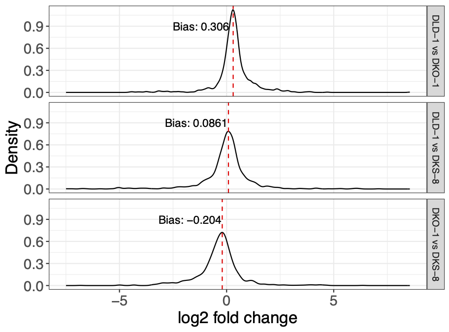
Colon cancer cell lines: density of log fold changes and the estimated compositional shift.
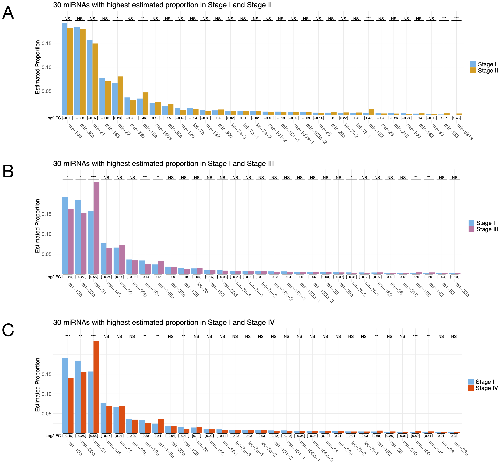
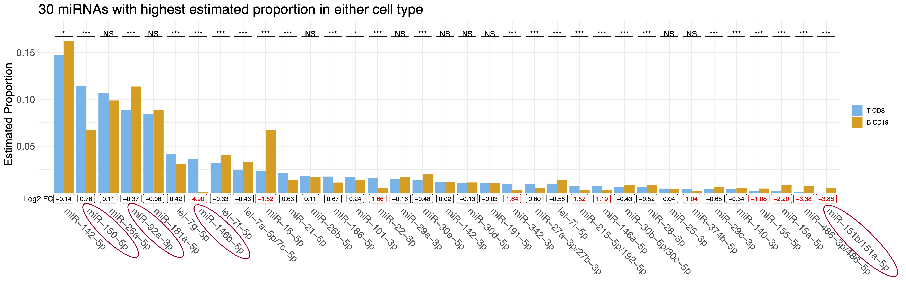